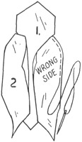
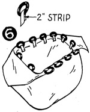

1952—How to Make Hats
by Ruby Carnahan
Fabric Bag to Match Hat
CUTTING
Cut two sections of No. 1 and two sections of No. 2 of wool, crinoline and blocking felt. Cut two tab facings of wool material extending 1" below notch. Cut two sections of No. 1 and two sections of No. 2 of lining material (just to notch on pattern).
SEWING
Baste crinoline and felt to wrong side of wool sections, 1 and 2. Baste tab facings at top of bag and stitch, (Illus. 3). Turn wool tab facings over and baste around top of tabs; stitch and press. Baste bag sections together, making a 1/4" seam, (Illus. 4).
Stitch and press seams open. Cut a strip of material 24" long and 1" wide. Stitch flat and press, (Illus. 5). Cut strip into twelve 2" pieces. Slip a ring in center of each 2" piece, fold material over ring and sew ends to bag. Sew four rings on each side of bag and two on each tab, (Illus. 6). Cut I 1/2 yds. of cord in half and run each piece through rings to close bag, (Illus. 7).
LINING
Baste and stitch lining together. Place a square of cardboard to fit bottom of bag. Slip lining in bag, turn in 1/2" and slip stitch to bag.